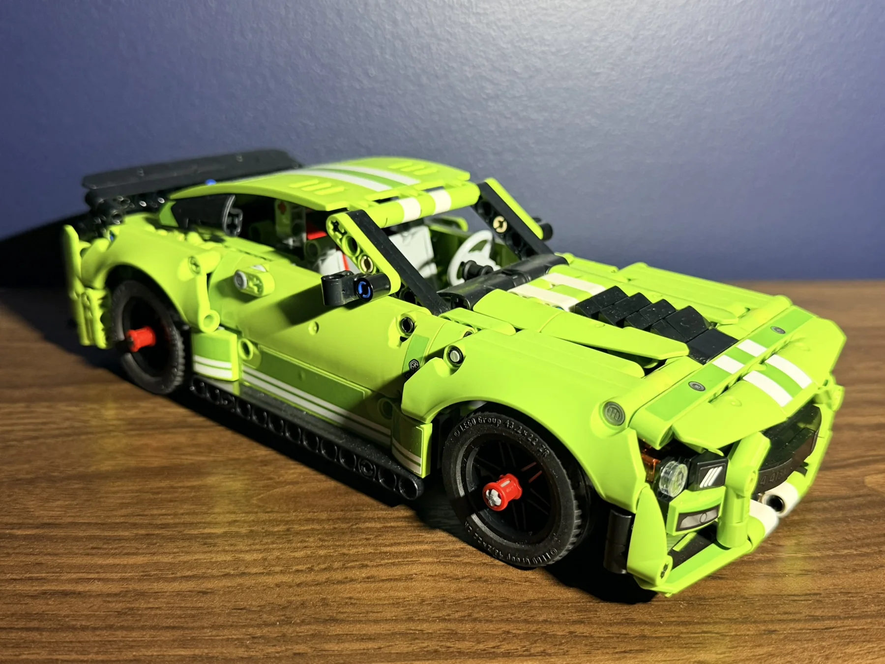
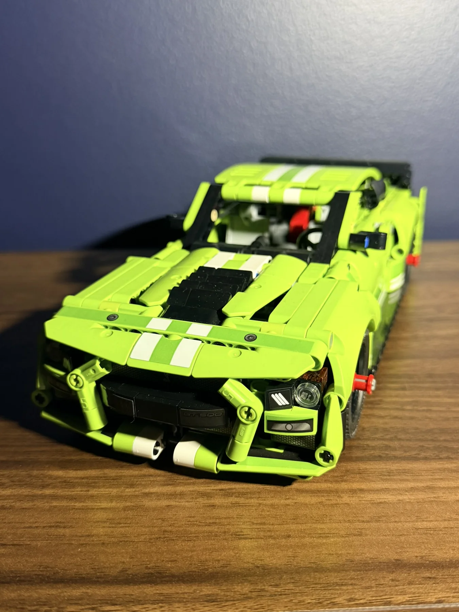
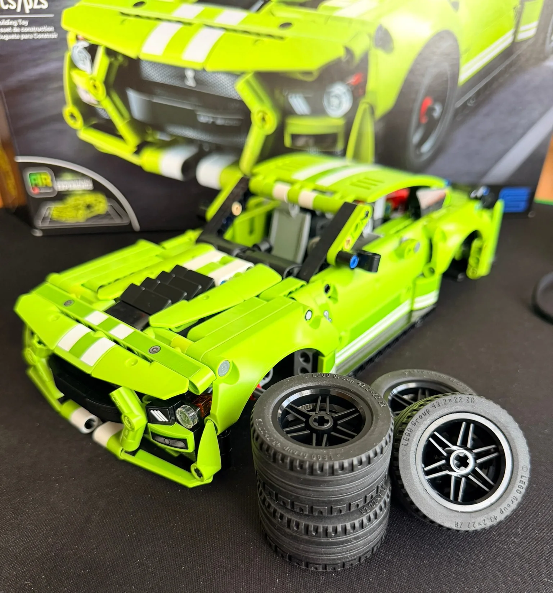
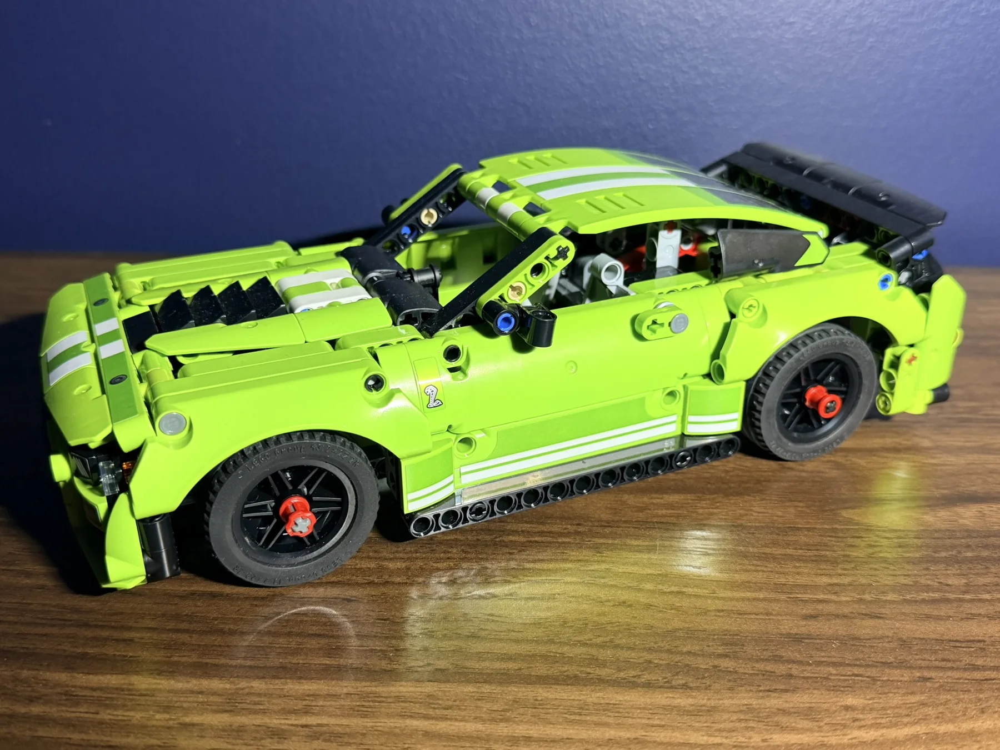
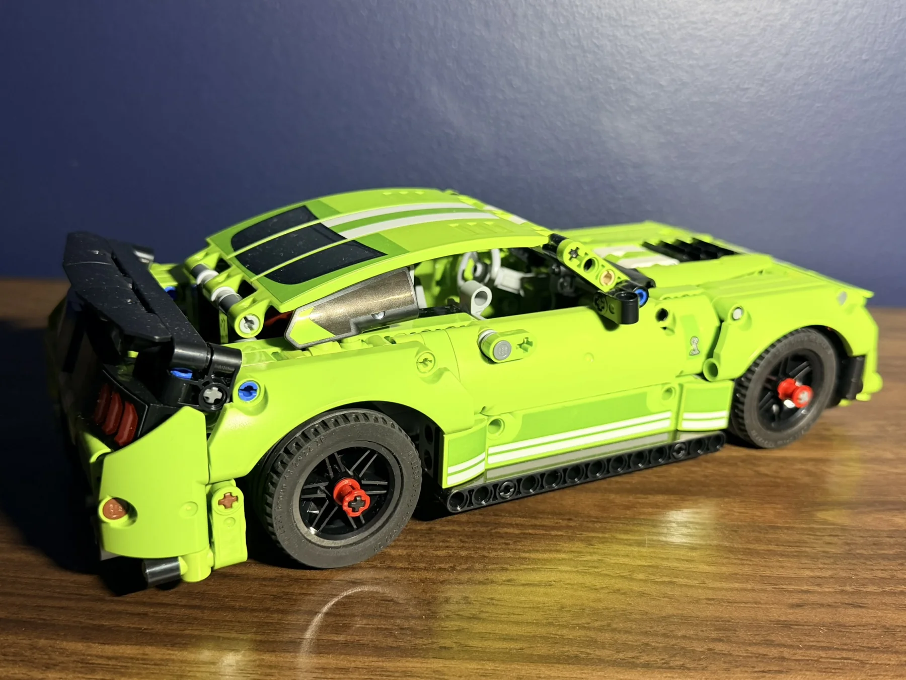
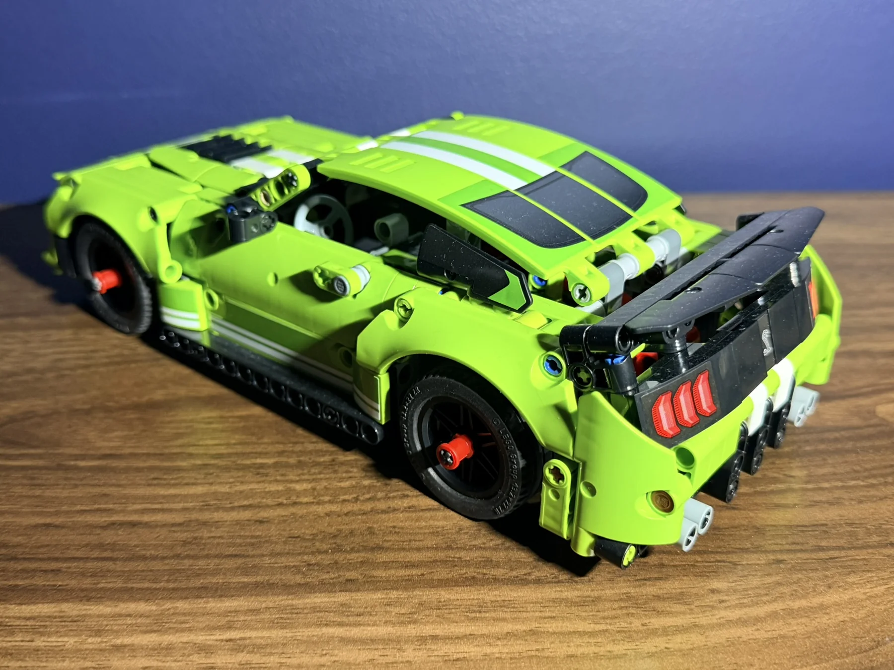
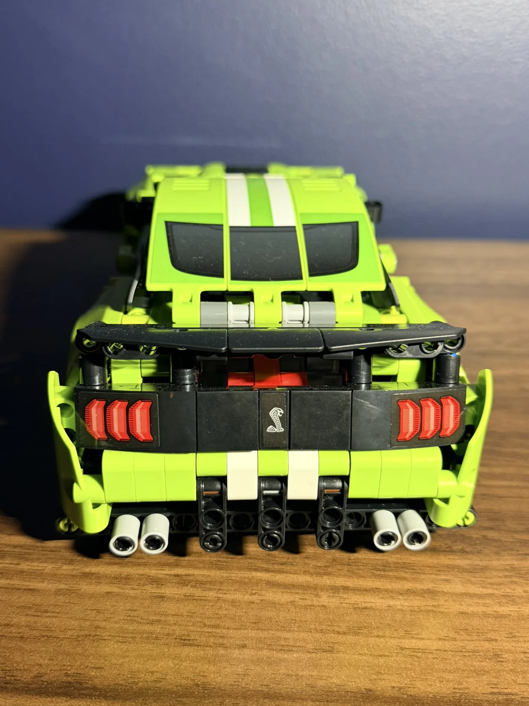
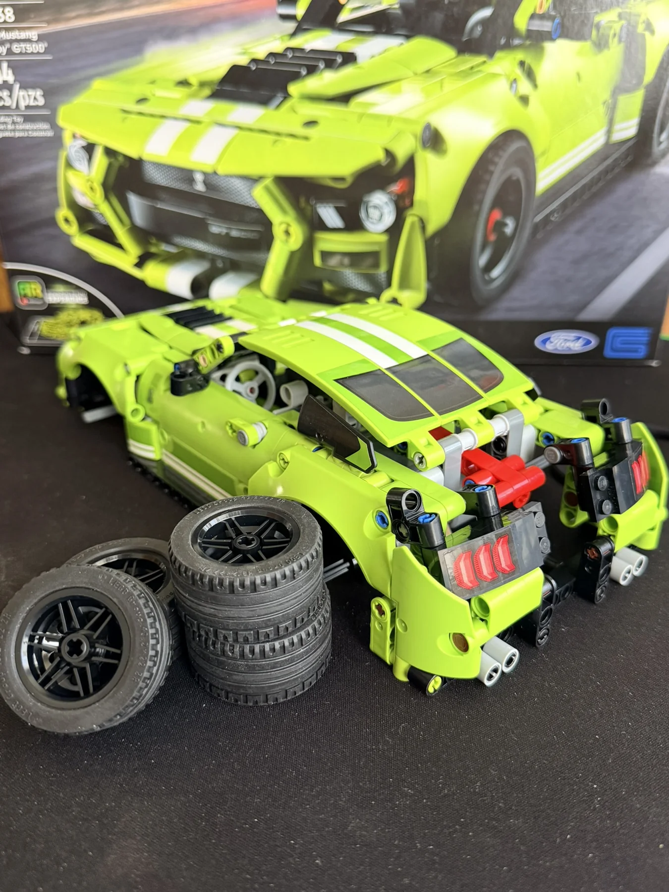

LEGO Technic Ford Mustang Shelby GT500
Lime-green muscle car styling, twin white racing stripes and a dramatic rear spoiler give this 544-piece Shelby GT500 plenty of attitude.

A bright take on a modern muscle car.
The LEGO Technic Ford Mustang Shelby GT500 brings a distinctive look to the build table. Its vivid lime-green panels and white stripes are immediately recognizable, while the low stance and wide body give the finished model a muscular silhouette.
These photos focus on the completed model from several angles, highlighting the hood, side profile, rear lights and oversized spoiler.
Stripes, vents and an aggressive front end.
The long hood, contrasting white stripes and black center venting create the Shelby's signature look. Up front, the layered bumper and headlight details add depth to the Technic bodywork.


The shape of the GT500.
From the side, the sculpted wheel arches, low bodywork and long hood stand out. White accents run along the lower doors, tying the side profile to the stripes across the roof.


Finishing with the rear details.
The rear spoiler is one of the model's strongest visual features. Combined with the three-bar taillights, Shelby emblem and contrasting black rear panel, it gives the GT500 a distinctive finish.



A Shelby that stands out on display.
At 544 pieces, the Ford Mustang Shelby GT500 makes a compact addition to the Technic car collection. The bright green finish, bold stripes and large rear wing give it a look that is hard to miss from any angle.
← Back to Builds